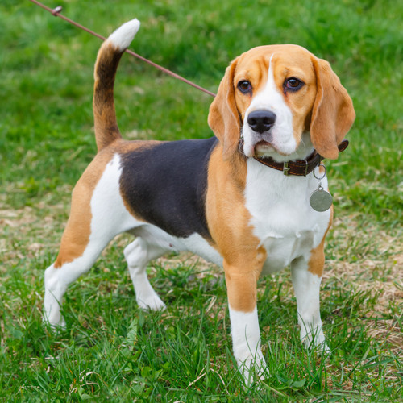

1.Shiba Inu
The shiba is one of the best dogs to me because it is "the" meme dog, they are small and have nice fur and their tails are curled on their backs which make them look really cool

2.Beagle
The Beagle is another one of my favorites, my grandma owned a beagle and she was very friendly and knew tricks
3.Corgis
Corgis are really fluffy and have short stubby legs that make them very cute and they used to be owned by the queen of england

4.Golden Retriever
The golden retriever is the first dog that I think of when I think of dogs, They are very friendly looking and have big noses that look cool